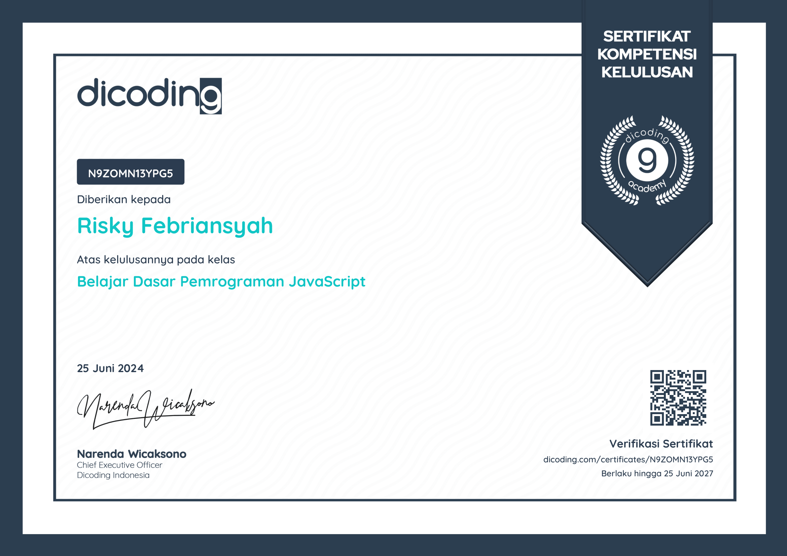
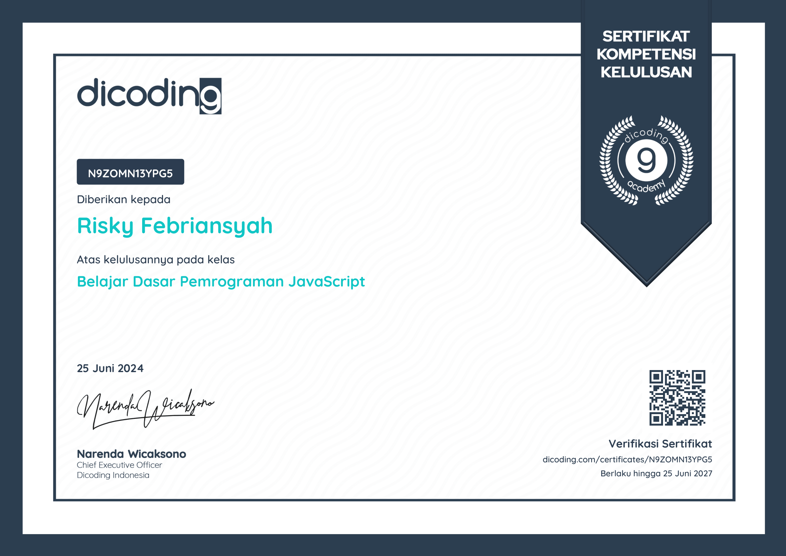

Tentang Saya
Halo! Saya adalah seorang Front-End Developer. Dengan latar belakang pendidikan dalam Ilmu Komputer & Jaringan dari SMK Pancasila Mojowarno, saya telah memperoleh pemahaman yang kuat tentang konsep-konsep dasar pemrograman dan teknologi informasi.
Selama beberapa tahun terakhir, saya telah terlibat dalam berbagai proyek pembuatan website, mulai dari Website sederhana hingga Website Official untuk SMK. Pengalaman, saya pernah PKL (Pelatihan Kerja Lapangan) Di PT IndoBismar.Yang dimana saya banyak belajar tentang ilmu komputer.
Dan saya juga bekerja di UG Arta Mandiri (Cash Management) Denpasar Barat,Bali di bagian CPC (Cash Processing Center) dari tanggal 28 Juni 2024 sampai sekarang.
Keahlian saya meliputi pembuatan website menggunakan bahasa pemrograman seperti JavaScript, serta penguasaan dalam hardware komputer(medium) dan pengoprasian OS Linux(low). Saya memiliki minat khusus dalam pemrograman web yang responsif dan inovatif.
Saya percaya bahwa inovasi terjadi ketika orang-orang dari berbagai latar belakang bekerja bersama untuk menciptakan sesuatu yang baru. Saya senang bekerja dalam tim yang kolaboratif, di mana ide-ide kreatif dipersilakan dan setiap orang memiliki kontribusi yang berarti.
Selain itu, saya juga aktif dalam komunitas IT seperti Web Developer & Teknik Jaringan, di mana saya terlibat dalam acara-acara pendidikan dan berbagi pengetahuan dengan rekan-rekan seprofesi. Saya percaya bahwa pembelajaran terus-menerus adalah kunci kesuksesan dalam dunia teknologi yang berubah dengan cepat ini.
Saya sangat antusias untuk terlibat dalam proyek-proyek menarik dan tantangan baru di masa depan. Terima kasih telah mengunjungi portofolio saya, dan jangan ragu untuk menghubungi saya jika Anda tertarik untuk berbicara dengan saya!
.png)


 
